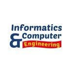

Pendidikan Teknik Informatika dan Komputer
Deskripsi Program Studi
Program Studi Pendidikan Teknik Informatika dan Komputer (PTIK) berfokus pada pencetakan tenaga pendidik profesional dan ahli teknologi yang kompeten dalam rekayasa perangkat lunak,
sistem komputer, dan multimedia.
Logo Program Studi

Kompetensi Lulusan
- Tenaga pendidik bidang keahlian Teknik Komputer dan Informatika.
- Pengembang perangkat lunak dan aplikasi berbasis web.
- Desainer grafis, pemodelan 3D, dan pengembang multimedia.
- Teknisi jaringan dan administrator sistem komputer.
Daftar Bidang Keahlian dan Mata Kuliah
- Pemrograman Dasar dan Lanjut (C++, Python)
- Desain Antarmuka dan Pengalaman Pengguna (UI/UX)
- Arsitektur Komputer dan Logika Digital
- Sistem Basis Data dan Pengembangan Web
Fasilitas Pendukung
Mahasiswa PTIK difasilitasi dengan laboratorium komputer berkinerja tinggi, perangkat keras simulasi elektronika analog dan digital, serta perangkat lunak pengembangan standar industri.
Informasi Kontak
Email: ptik@unm.ac.id
Website Resmi: Fakultas Teknik Universitas Negeri Makassar